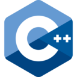
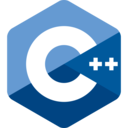

Educación
Primaria:
- Escuela Normal Superior en Lenguas Vivas Nº2 "Mariano Acosta"
- Escuela Primaria Nº49 "Vicente López y Planes"
Secundaria:
- Escuela de Educación Secundaria Técnica Nº5 "Amancio Williams"
Tecnologías con las
que he trabajado:
 


Sobre mí
Desde pequeño me atrajo el mundo de la computación, informática, el desarrollo de videojuegos, sitios web, etc. Cuando llegué a la secundaria me anoté en una escuela técnica para poder seguir este camino, siendo consciente de la presión, la competitividad del rubro y que debía estar un paso adelante. Durante mi trayecto, confirmé mi pasión por el desarrollo de videojuegos, y dar vida a mis ideas.